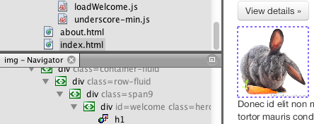
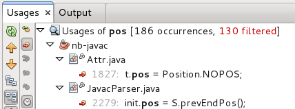
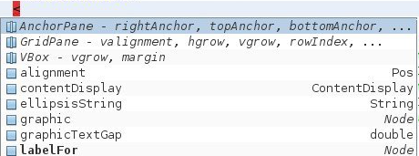
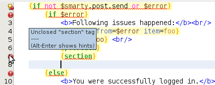
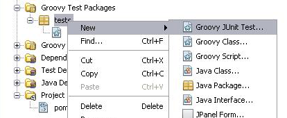

Informações da Release do NetBeans IDE 7.3
O NetBeans IDE 7.3 permite que os desenvolvedores criem e depurem aplicações móveis e da Web avançadas usando os padrões mais recentes do HTML5, do JavaScript e do CSS3. Os desenvolvedores podem esperar uma experiência de desenvolvimento de rich web do mais alto nível técnico com um inspetor de página e editor de estilo CSS, um editor JavaScript totalmente reformulado, um novo depurador JavaScript e muito mais. Os destaques adicionais disponíveis na versão 7.3 incluem aperfeiçoamentos contínuos no suporte do IDE para Groovy, PHP, JavaFX e C/C++.
O NetBeans IDE 7.3 está disponível em inglês, português do Brasil, japonês, russo e chinês simplificado.
Obter o NetBeans IDE 7.3

Documentação
Use os seguintes itens para começar a usar o NetBeans IDE 7.3:
Novas Funcionalidades em Destaque
|
Project Easel: Desenvolvimento da Aplicação em HTML5
- O projeto de Aplicação em HTML5 com o suporte de teste do JavaScript
- Editor JavaScript significantemente aprimorado
- Inspetor de página e editor de estilo visual CSS
- Depurador de JavaScript
- Browser de WebKit incorporado; integração profunda com o Chrome
|

Captura de Tela Completa
|
|
Java
- Caminhos detalhados: Uma nova barra de navegação mostra a atual incorporação no editor
- As views Mostrar membro e Mostrar hierarquia foram atualizadas
- Conjunto de novas dicas e as refatorações
- Filtros para os resultados de Localizar Utilizações
- Guia do editor POM efetiva no editor pom.xml
|

|
|
Java EE
- Ferramenta de teste Java Persistence JPQL
- Aperfeiçoamentos no Desenvolvimento do Serviço REST
|
|
|
JavaFX
- Suporte a FXML/Scene Builder
- Suporte a JDK 7u6+ no Windows, Mac e Linux
- A edição do FXML melhorou bastante, permitindo autocompletar códigos de forma precisa, marcação de erros e mais
- A ação Gerar Controlador FXML foi adicionada em arquivos FXML
|

|
|
PHP
- Parsers para Anotações com Namespace (Symfony 2, Doctrine 2 etc.)
- Integração do Composer Básico (Gerenciador de Dependência para PHP)
- Autocompletar Código Twig (com documentação)
- Correspondência de Chaves Smarty para Tags Relacionadas
- Erros de Parser do Smarty de Tags Não Correspondentes
|

|
|
Groovy
- Integração do Groovy 2.0
- Suporte em projetos do Java EE
- Suporte a teste do Groovy JUnit
- Refatoração básica implementada (Localizar Utilizações, Renomear para tipo de classe)
|

|
|
Criador de Perfil
- Criação de perfil de memória de amostra
- Comparação de snapshots de CPU
- Suporte para máquina com Linux ARM
|

|
|
C/C++
- Utilização de memória reduzida pelo menos à metade para grandes projetos
- Aperfeiçoamentos na velocidade do parser
- O índice do parser pode ser mantido e realocado com o projeto
|
|
|
Plataforma NetBeans
- Filtragem no conteúdo da caixa de diálogo Opções
- Menu Novo Arquivo / Abrir Arquivo Recente e um novo atalho CTRL+ALT+T
- A barra de ferramentas principal mostra uma nova lista drop-down para situações de overflow
|
|
Saiba mais sobre as funcionalidades desta release na página Novidades e Destaques do NetBeans IDE 7.3.
Visite o Catálogo da Release do NetBeans.